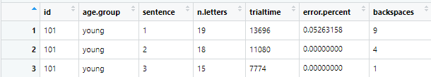
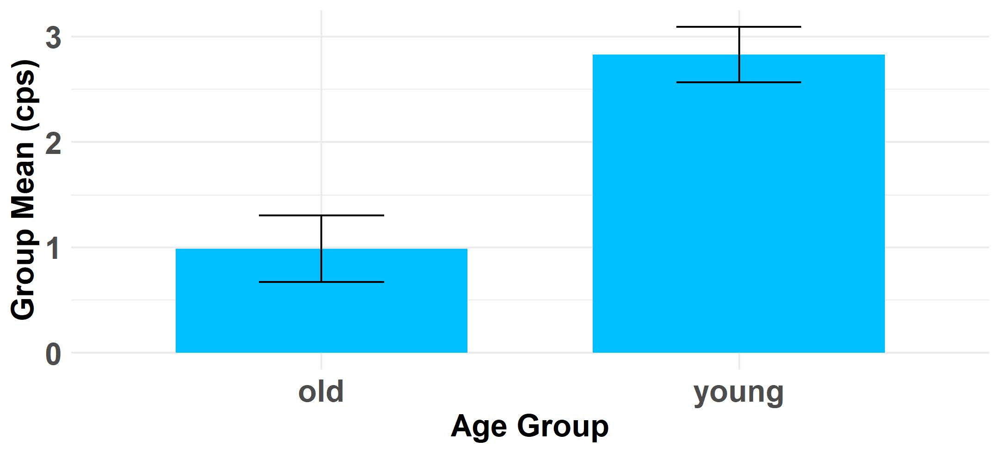
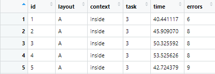
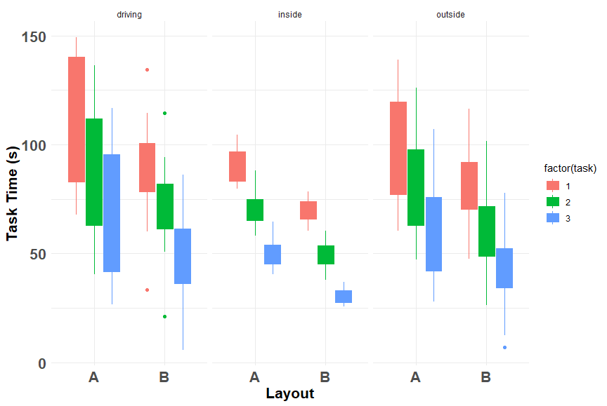
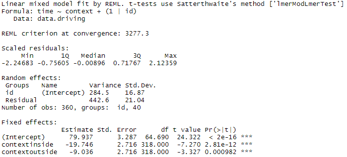
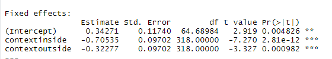
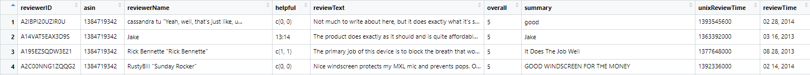
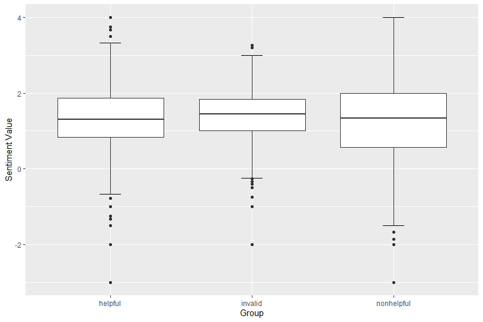

User Research
Statistical Analysis R
I took the course User Research in Aalto University (Finland, 2019), and got trained in technical skills to experiment interactive technologies with users, involving the whole path from designing experiments to conducting them, and analyzing the collected data with R. Here are some main tasks I did during the course:
Contents
Evaluate Typing Performance on Smartphone
Evaluate The Usability of Layouts
Evaluate The Quality of Reviews
Conclusion
Evaluate Typing Performance on Smartphone
hypothesis testing t-test effect size
Dataset
The dataset is from a study where young and old adults were asked to transcribe sentences with a normal smartphone Qwerty keyboard, for example:
Compare the typing speed between groups
The typing speed can be computed by measuring characters per second (CPS). The group means are 2.83 CPS for young adults and 0.99 CPS (characters per second) for old adults. The 95% CIs are [2.57, 3.09] for young adults and [0.67, 1.31] for old adults. The bar graph with 95% CI showing both means:
Hypothesis testing with t-test
The hypothesis is: Mean CPS is different between the age groups; And the null hypothesis is: Mean CPS is not different between the age groups.
We observe mean CPS for young adults = 2.83 (SD = 0.50), mean CPS for old adults = 0.99 (SD = 0.51). t-test gives t(19) = -8.72, p-value = 0.0004. Since p < α(=0.05), we reject H0. We conclude that, these data are supportable for the hypothesis that the mean CPS is different between the age groups.Effect size
The way used to calculate the effect size is d = (Mean CPS for young adults – Mean CPS for old adults) / Standard Deviation, and the result is that the effect size d = 3.62. According to Cohen’s table, since d > 0.80, we can say that there is a large effect on the difference and the required sample size N = 26.
Evaluate The Usability of Layouts
hypothesis testing linear model
Dataset
The dataset is from a study that tested two messaging interfaces “A” and “B”. 40 participants were divided into two groups, with half doing tasks with A and half B. All participants did tasks with their assigned interfaces in three contexts: inside, outside while walking, and while driving. Each participant did multiple tasks in each environment, with task time and number of task errors recorded.
Here, faster task times and lower number of errors are taken to be a sign of better usability. A screenshot of the dataset:
Visualize the effect of IVs on DVs
The DVs(Dependent Variable) here are the task time and number of errors. For example, I visualized the effect of all IVs(task/context/layout) on task time with the boxplot, which gives me a good overview of what happened in the experiment and what effects to expect in the model:
Hypothesis testing with Linear Model
Visualizations are usually the best way to communicate results. However, they are not a replacement for statistical tests: they don’t assess the strength of the evidence in a relation to a hypothesis. I used a linear model to test the hypothesis that regardless of the layout (A or B), task times differ between the three task contexts.m1 <- lmer(time ~ context + (1|id), data = data.driving) summary(m1)and the results are:

From the results of the model, the estimates show that: The average task time in the driving context is 79.94 seconds; The average task time in the inside context is 79.94 - 19.75 = 60.19 seconds; The average task time in the outside context is 79.94 – 9.04 = 70.9 seconds. According to the t-test results, we can conclude that the data are supportable for the hypothesis.Effect size
The effect size can be calculated by normalizing the DV, and the resulting estimates now can be interpreted similarly to Cohen’s d:m1.std <- lmer(scale(time) ~ context + (1|id), data = data.driving) summary(m1.std)and the results are:

From the results, we can know that there is a medium effect while moving from driving context to inside context (effect size = -0.71), a small effect while moving from driving context to outside context (effect size = -0.31), and a small effect while moving from inside context to outside context (effect size = (0.34-0.71)-(0.34-0.32)=-0.39).
Evaluate The Quality of Reviews
Sentiment Analysis POS Tagging
Dataset
The example dataset used in this exercise is Musical_Instruments_5, which is downloaded from “Amazon data subset”. The dataset has 10261 rows of data, in which 10254 rows have review texts, for example:
Divide helpful and non-helpful reviews
According to the helpfulness rating (helpful [1] / helpful [2]), I divided the data into three pieces: 1) Invalid, which refers to data with helpfulness rating equals 0 since this piece of data cannot be measured whether helpful or non-helpful for the lack of information; 2) Helpful, which refers to data with helpfulness rating above or equal to 0.5 since this shows that more than half people who rated this review tend to think it is helpful; 3) Non-helpful, which refers to data with helpfulness rating lower than 0.5 since this shows that more than half people think this review is non-helpful.data.amazon <- data.amazon %>% filter(nchar(reviewText) > 0) %>% mutate(ishelpful = ifelse(helpful.p >= 0.5, 1, ifelse(helpful.total == 0, -1, 0))) %>% mutate(group.h = ifelse(grepl("-1", ishelpful), "invalid", ifelse(grepl("1", ishelpful), "helpful", ifelse(grepl("0", ishelpful), "nonhelpful", NA))))There are 1082 reviewers in helpful group, 413 in non-helpful group, and 1386 in invalid group. And there are 2942 reviews are helpful, 516 reviews are non-helpful, and 6796 reviews are invalid; The average length of review is 793 characters for helpful group, 502 characters for non-helpful group, and 352 for invalid group.
Sentiment Analysis
According to the sentiment table provided by R, I calculated the mean sentiment value of each sentence in data group and draw a boxplot to show the distribution of the value:

The sentiments are positive if the value is above zero and negative if the value is below zero. I calculated the average proportion of positive reviews in each group, and I noticed both helpful and non-helpful groups have larger average proportions of positive reviews (0.02,0.01) than negative reviews (0.006,0.003). From the result, I can guess that both positive and negative reviews can be useful to people since those reviews with sentiments can give people advice or warnings for the product, but people tend to like more about positive reviews.POS Tagging
I used a subsample of 40 samples for each dataset to extract the POS (Part of Speech, e.g. different is ADJ, an adjective) tags. For example, the helpful group group have the set of POS tags: ADJ, ADP, ADV, AUX, CCONJ, DET, INTJ, NOUN, NUM, PART, PRON, PROPN, PUNCY, SCONJ, VERB, X. I conducted 6 times of experiments and finally found out that, the frequency of tag ADJ appeared in each review in helpful group are always higher than the other two groups.Then I analyzed the adjectives used in each group, it turned out that people might tend to use more adjectives while writing positive reviews. For example, the top 5 adjectives are “more, pedal, good, great, little” in helpful group, these words are always used to express a positive feeling about the product. And the 5 adverbs appeared a lot in non-helpful group are “so, just, well, only, even”, in which the words “just” and “only” are mostly used in negative expressions.
Conclusion
These exercises enable me to learn how to plan and execute empirical user studies and use statistical analysis to provide proofs and insights to the design. I am hoping to learn and practice these skills in real use.